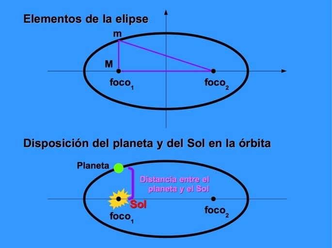

Leyes de kepler
¿Cuales son las leyes de Kepler?
Las leyes de Kepler o leyes del movimiento planetario son leyes científicas que describen el movimiento de los planetas alrededor del Sol. Reciben el nombre de su creador, el astrónomo alemán Johannes Kepler
Primera ley de Kepler o ley de las orbitas.
La primera ley de Kepler se conoce también como “ley de las órbitas”. Determina que los planetas giran alrededor del Sol describiendo una órbita con forma de elipse. El Sol se ubica en uno de los focos de la elipse.
